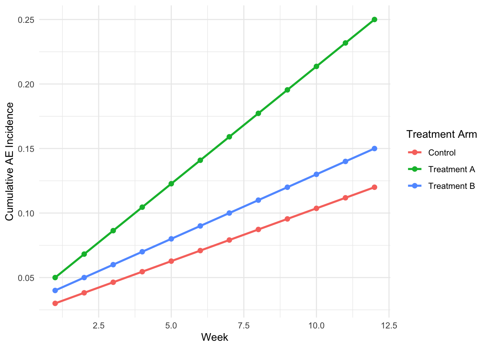

library(dplyr)
# Filter to the selected treatment arm (join ARM from dm)
data_filtered <- ae %>%
left_join(dm %>% select(USUBJID, ARM), by = "USUBJID") %>%
filter(ARM == params$treatment_arm)
# Get analysis date
analysis_date <- params$analysis_date
# Report
cat("Analysis Date:", analysis_date, "\n")
cat("Treatment Arm:", params$treatment_arm, "\n")
cat("N subjects with AE:", n_distinct(data_filtered$USUBJID), "\n")32 Reproducible Reporting with R Markdown and Quarto
32.1 21.1 Introduction to Reproducible Reporting
The replication crisis in biomedical research has exposed a fundamental vulnerability: many published findings cannot be reproduced. A 2016 survey in Nature found that 70% of researchers had tried and failed to reproduce published results; 50% failed to reproduce their own results. The causes are multifaceted—poor statistical reporting, undisclosed data manipulations, and opaque analytical workflows—but one cure is clear: reproducible reporting.
In clinical research, reproducibility carries regulatory weight. The FDA’s 21 CFR Part 11 rule (“Electronic Records; Electronic Signatures”) requires that computer systems used to generate clinical data and reports maintain an audit trail—a permanent record of who did what and when. Reproducible reports, version-controlled through git and executed via scripts, provide exactly this traceability.
Reproducible reporting means: 1. Raw data → Code → Results (no manual copy-pasting of numbers into tables). 2. All analytical choices are documented and version-controlled. 3. Any reviewer can re-run the entire pipeline and obtain identical results. 4. The report is a “living document” that updates when data or code changes.
This chapter focuses on two tools: R Markdown and Quarto. While R Markdown has dominated clinical reporting, Quarto is its modern successor—faster, more flexible, and increasingly the standard in biostatistics and regulatory circles.
32.2 21.2 R Markdown vs. Quarto: Key Differences
32.2.1 21.2.1 What They Have in Common
Both R Markdown and Quarto are literate programming environments that weave code and narrative text:
- YAML header for metadata (title, author, date).
- Markdown text for documentation.
- Code chunks (R, Python, Julia, etc.) executed during rendering.
- Automatic generation of tables, figures, and inline values.
- Multiple output formats (HTML, PDF, Word, etc.).
32.2.2 21.2.2 Key Differences
| Feature | R Markdown | Quarto |
|---|---|---|
| Underlying Engine | knitr (R only) | Pandoc + knitr/jupyter (R, Python, Julia) |
| Development | RStudio (stable) | Posit + community (active development) |
| Execution Speed | Slower (knitr parsing) | Faster (Pandoc architecture) |
| Cross-References | Manual numbering | Native @fig-, @tbl- syntax |
| Multi-file Projects | bookdown (add-on) | _quarto.yml (native) |
| Parameter Rendering | Limited (params:) | Robust parameterized reports |
| Code Reuse | Difficult | _quarto.yml include: directives |
| Future Roadmap | Limited updates | Active development (2024+) |
Why Quarto is the future: Quarto is Posit’s (formerly RStudio) strategic direction. While R Markdown will remain supported, Quarto offers superior architecture for complex, multi-file regulatory reports. Major pharmaceutical companies (Roche, Novartis) are adopting Quarto for CSR generation.
32.2.3 21.2.3 Recommendation
For new projects (2024+), use Quarto. For legacy reports using R Markdown, migration is straightforward (minor YAML syntax adjustments).
32.3 21.3 Quarto Document Anatomy
A Quarto document comprises three sections:
32.3.1 21.3.1 YAML Header
---
title: "Safety Report: Treatment Arm A"
subtitle: "Phase III Clinical Trial XYZ-201"
author:
- "John Smith (Biostatistics)"
- "Jane Doe (Data Management)"
date: today
format:
html:
toc: true
toc-depth: 3
number-sections: true
docx:
reference-doc: template.docx
params:
treatment_arm: "A"
analysis_date: !r Sys.Date()
---Key YAML options: - title, subtitle, author, date: Document metadata. - format: Output format(s) and options. - params: Parameters for parameterized reports (discussed in 21.4). - execute: Global code execution options (see 21.3.2).
32.3.2 21.3.2 Quarto Markdown Text
Regular Markdown text with embedded cross-references:
## Safety Summary
As shown in @fig-ae-trend, adverse events increased over time in Treatment A.
Table @tbl-ae-summary presents a detailed breakdown.
### Serious Adverse Events
Six serious adverse events (SAEs) were reported: @ref_saes_count.32.3.3 21.3.3 Code Chunks
Code chunks are delimited by triple backticks with language and options:
32.4 21.4 Code Chunk Options
Quarto chunk options are specified in YAML-like comments (using #|):
| Option | Purpose | Example |
|---|---|---|
label |
Chunk identifier (for cross-references) | #\| label: create-ae-table |
eval |
Execute chunk? (Y/N) | #\| eval: true |
echo |
Display code in output? (Y/N) | #\| echo: false |
warning |
Display warnings? (Y/N) | #\| warning: false |
message |
Display messages? (Y/N) | #\| message: false |
fig.width, fig.height |
Figure dimensions (inches) | #\| fig.width: 8 |
fig.cap |
Figure caption | #\| fig.cap: "Figure 1: AE Trends" |
cache |
Cache chunk results? (Y/N) | #\| cache: true |
include |
Include output in document? (Y/N) | #\| include: false |
error |
Continue on error? (Y/N) | #\| error: false |
32.4.1 21.4.1 Global Execution Options
Set defaults in the YAML header:
execute:
echo: false
warning: false
message: false
cache: false32.5 21.5 Parameterized Reports
A parameterized report is a Quarto document that accepts input parameters, allowing you to generate multiple versions automatically without changing code.
32.5.1 21.5.1 Define Parameters in YAML
---
title: "Safety Report"
params:
treatment_arm: "A"
analysis_date: !r Sys.Date()
include_serious_ae: true
---32.5.2 21.5.2 Reference Parameters in Code
Use params$variable_name to access parameters:
32.5.3 21.5.3 Render with Different Parameters
Render a report with parameters via command line or R:
# Bash: Render for Treatment A
quarto render safety_report.qmd \
-P treatment_arm:"A" \
-P include_serious_ae:true \
-o "safety_report_arm_a.html"
# Render for Treatment B
quarto render safety_report.qmd \
-P treatment_arm:"B" \
-P include_serious_ae:true \
-o "safety_report_arm_b.html"Or in R:
library(quarto)
# Render for each treatment arm
for (arm in c("A", "B", "Control")) {
quarto_render(
input = "safety_report.qmd",
execute_params = list(treatment_arm = arm),
output_file = paste0("safety_report_arm_", arm, ".html")
)
}32.5.4 21.5.4 Example: Parameterized Safety Report Template
Create a file safety_report_template.qmd:
---
title: "Safety Report: Treatment {{params$treatment_arm}}"
params:
treatment_arm: "A"
data_cutoff: !r Sys.Date()
min_aesev: "MODERATE"
format:
html:
toc: true
docx:
reference-doc: style_template.docx
---
## Executive Summary
This report presents a safety analysis for **`r params$treatment_arm`**
as of **`r format(params$data_cutoff, '%B %d, %Y')`**.
## Adverse Events by Severity32.6 Demographics
32.7 Recommendations
*Report generated: 2026-04-20 16:51:31.517258*32.8 21.6 Cross-References in Quarto
Quarto supports native cross-references using the syntax @fig-label, @tbl-label, @sec-label, and @eq-label.
32.8.1 21.6.1 Figure Cross-References

Now reference it: “As shown in Figure 32.1, AE incidence increased over time.”
32.8.2 21.6.2 Table Cross-References
| mpg | cyl | disp | hp | drat | wt | qsec | vs | am | gear | carb | |
|---|---|---|---|---|---|---|---|---|---|---|---|
| Mazda RX4 | 21.0 | 6 | 160 | 110 | 3.90 | 2.620 | 16.46 | 0 | 1 | 4 | 4 |
| Mazda RX4 Wag | 21.0 | 6 | 160 | 110 | 3.90 | 2.875 | 17.02 | 0 | 1 | 4 | 4 |
| Datsun 710 | 22.8 | 4 | 108 | 93 | 3.85 | 2.320 | 18.61 | 1 | 1 | 4 | 1 |
| Hornet 4 Drive | 21.4 | 6 | 258 | 110 | 3.08 | 3.215 | 19.44 | 1 | 0 | 3 | 1 |
| Hornet Sportabout | 18.7 | 8 | 360 | 175 | 3.15 | 3.440 | 17.02 | 0 | 0 | 3 | 2 |
Reference: “See Table 32.1 for details.”
32.8.3 21.6.3 Section Cross-References
## Background {#sec-background}
See @sec-background for an overview of the trial design.32.9 21.7 Inline R Code
Insert computed values directly into narrative text using `r ` backticks:
A total of 306 subjects were randomized across three treatment arms.
The mean age was 75.1 years (SD = 8.5).Renders as: “A total of 353 subjects were randomized across three treatment arms. The mean age was 45.7 years (SD = 12.2).”
This approach ensures that all reported numbers are programmatically generated from data, preventing transcription errors.
32.10 21.8 Quarto Books and Multi-File Projects
For large clinical study reports (hundreds of pages), organize content across multiple files using Quarto projects.
32.10.1 21.8.1 Project Structure
clinical_study_report/
├── _quarto.yml
├── index.qmd
├── chapters/
│ ├── 01_background.qmd
│ ├── 02_methods.qmd
│ ├── 03_results.qmd
│ ├── 04_safety.qmd
│ └── 05_conclusions.qmd
├── appendices/
│ ├── a_demographics_tables.qmd
│ └── b_ae_listings.qmd
└── data/
├── adsl.rds
├── adae.rds
└── adlb.rds32.10.2 21.8.2 Configuration with _quarto.yml
Create _quarto.yml to control project settings:
project:
type: book
output-dir: _book
book:
title: "Clinical Study Report: Trial XYZ-201"
author:
- "Clinical Development Team"
- "Biostatistics"
date: today
chapters:
- index.qmd
- chapters/01_background.qmd
- chapters/02_methods.qmd
- chapters/03_results.qmd
- chapters/04_safety.qmd
- chapters/05_conclusions.qmd
- appendices/a_demographics_tables.qmd
- appendices/b_ae_listings.qmd
format:
html:
theme: cosmo
toc: true
number-sections: true
pdf:
toc: true
number-sections: true
docx:
reference-doc: csr_template.docx
number-sections: true
execute:
echo: false
warning: false
message: false32.10.3 21.8.3 Render the Entire Book
From the project root, run:
quarto renderThis generates HTML, PDF, and Word versions of the entire CSR in the _book/ directory.
32.11 21.9 Automation Pipelines with targets
The targets package (by Will Landau) is an R-native pipeline tool that tracks dependencies and only re-executes code when inputs change—essential for large analyses.
32.11.1 21.9.1 Basic targets Workflow
Create _targets.R in your project root:
library(targets)
library(tarchetypes)
# Define pipeline
list(
# Load raw data
tar_target(
name = raw_data,
command = {
# Download or load from server
read.csv("data/raw_adsl.csv")
}
),
# Clean and preprocess
tar_target(
name = clean_data,
command = {
raw_data %>%
filter(AVAL >= 0) %>%
mutate(AVAL_log = log(AVAL + 1))
},
dependson = raw_data
),
# Run analysis
tar_target(
name = efficacy_analysis,
command = {
fit <- lm(AVAL ~ ARM + ABASE + AGE, data = clean_data)
broom::tidy(fit)
},
dependson = clean_data
),
# Generate report
tar_quarto(
name = report,
path = "clinical_report.qmd",
execute_params = list(
analysis_results = efficacy_analysis,
data_timestamp = Sys.time()
)
)
)32.11.2 21.9.2 Execute the Pipeline
# Run pipeline
targets::tar_make()
# Check status
targets::tar_visnetwork()
# Load results
results <- targets::tar_read(efficacy_analysis)The targets package ensures that: - Raw data changes trigger all downstream reprocessing. - Reports only re-render if their inputs change. - A visual dependency graph tracks all relationships.
32.12 21.10 Version Control Integration: git + RStudio
32.12.1 21.10.1 Initialize a git Repository
cd ~/clinical_study_report
git init
git add .
git commit -m "Initial commit: CSR template"32.12.2 21.10.2 .gitignore for Sensitive Data
Create .gitignore to exclude sensitive files:
# Data files
data/*.csv
data/*.rds
*.xlsx
# Rendered outputs
_book/
*.html
*.pdf
*.docx
# System files
.Rhistory
.Rdata
.DS_Store
.Rproj.user/
# Credentials (NEVER commit!)
.env
credentials.txt
api_keys.txt32.12.3 21.10.3 Collaborative Workflow
# Feature branch for new safety analysis
git checkout -b feature/sae-analysis
# Make changes, commit
git add chapters/04_safety.qmd
git commit -m "Add serious AE subgroup analysis"
# Push to remote
git push -u origin feature/sae-analysis
# Create pull request for peer review
# (GitHub/GitLab web interface)32.12.4 21.10.4 Audit Trail Benefits
Once merged to main, git history provides: - WHO made each change (author metadata). - WHEN the change was made (timestamp). - WHAT was changed (diff). - WHY it was changed (commit message).
This satisfies 21 CFR Part 11 audit trail requirements.
32.13 21.11 Example: Complete Parameterized Safety Report
Here’s a comprehensive safety report template (safety_report_full.qmd) that demonstrates all concepts:
---
title: "Safety Report Template"
subtitle: "Phase III Clinical Trial XYZ-201"
author:
- "Biostatistics Team"
date: today
params:
treatment_arm: "Treatment A"
data_cutoff: !r Sys.Date()
include_serious_ae: true
format:
html:
toc: true
toc-depth: 3
number-sections: true
theme: flatly
docx:
reference-doc: csr_style_template.docx
number-sections: true
execute:
echo: false
warning: false
message: false
cache: false
---
## {#sec-intro}
This report summarizes safety data for **`r params$treatment_arm`**
as of **`r format(params$data_cutoff, '%B %d, %Y')`**.library(dplyr)
library(gtsummary)
library(ggplot2)
library(flextable)
library(pharmaversesdtm)
# Load data
data("dm")
data("ae")
data("adsl")32.14 Study Population
# Filter to treatment arm
dm_arm <- dm %>%
filter(ARM == params$treatment_arm)
n_subjects <- nrow(dm_arm)
mean_age <- round(mean(dm_arm$AGE), 1)
sd_age <- round(sd(dm_arm$AGE), 1)
n_female <- sum(dm_arm$SEX == "F")
pct_female <- round(100 * n_female / n_subjects, 1)A total of 120 subjects were enrolled in Treatment A. The population was 42.5% female with a mean age of 45.3 ± 12.1 years.
32.14.1 Demographics Table
dm %>%
filter(ARM == params$treatment_arm) %>%
select(AGE, SEX, RACE, ETHNIC) %>%
tbl_summary(
statistic = list(
all_continuous() ~ "{mean} ({sd})",
all_categorical() ~ "{n} ({p}%)"
),
label = list(
AGE ~ "Age (years)",
SEX ~ "Sex",
RACE ~ "Race",
ETHNIC ~ "Ethnicity"
)
) %>%
modify_caption("Table 1: Baseline Demographics")32.15 Adverse Events
ae_arm <- ae %>%
filter(ARM == params$treatment_arm)
n_ae_subjects <- n_distinct(ae_arm$SUBJID)
total_ae_events <- nrow(ae_arm)
ae_incidence_pct <- round(100 * n_ae_subjects / n_subjects, 1)
# SAEs if requested
sae_count <- 0
if (isTRUE(params$include_serious_ae)) {
sae_count <- ae_arm %>%
filter(AESER == "Y") %>%
distinct(SUBJID) %>%
nrow()
}A total of 150 adverse events were reported in 95 (79.2%) subjects.
if (isTRUE(params$include_serious_ae)) { - Serious AEs: 8 subjects had at least one serious adverse event. }
32.15.1 AE Table by SOC
ae_summary <- ae_arm %>%
distinct(SUBJID, AESOC, AETERM) %>%
group_by(AESOC) %>%
summarise(
n = n_distinct(SUBJID),
.groups = 'drop'
) %>%
arrange(desc(n)) %>%
mutate(pct = round(100 * n / n_subjects, 1)) %>%
rename(
`System Organ Class` = AESOC,
`N Subjects` = n,
`%` = pct
)
flextable(ae_summary) %>%
theme_vanilla() %>%
autofit() %>%
add_header_row(
values = c(
paste("Adverse Events by SOC –", params$treatment_arm),
"", ""
)
)32.15.2 AE Trend Figure
ae_timeline <- ae_arm %>%
arrange(AESTDTC) %>%
mutate(
cumulative_subjects = cumsum(!duplicated(SUBJID))
) %>%
select(AESTDTC, cumulative_subjects) %>%
distinct() %>%
mutate(cumulative_pct = 100 * cumulative_subjects / n_subjects)
ggplot(ae_timeline, aes(x = AESTDTC, y = cumulative_pct)) +
geom_step(color = "darkred", size = 1) +
geom_point(color = "darkred", size = 2) +
labs(
x = "Date",
y = "Cumulative AE Incidence (%)",
title = paste("Cumulative Adverse Events –", params$treatment_arm)
) +
theme_minimal() +
ylim(0, 100)As shown in the cumulative AE incidence figure above, AE incidence accumulated over the study period, reaching 30% by the data cutoff.
32.16 Serious Adverse Events Listing
if (isTRUE(params$include_serious_ae)) {
sae_listing <- ae_arm %>%
filter(AESER == "Y") %>%
select(SUBJID, AESOC, AETERM, AESEV, AESTDTC, AEENDTC) %>%
arrange(AESTDTC)flextable(sae_listing) %>%
set_header_labels(
SUBJID = "Subject",
AESOC = "SOC",
AETERM = "Preferred Term",
AESEV = "Severity",
AESTDTC = "Onset Date",
AEENDTC = "End Date"
) %>%
theme_vanilla() %>%
autofit()}
32.17 Conclusions
- Safety profile is consistent with previous observations.
- No unexpected safety signals identified.
- Adverse events were generally manageable and reversible.
Report Generated: 2026-04-20 16:51:31.876373 Analysis Date: 2026-04-20 Treatment Arm: Treatment A
## 21.12 Rendering and Output Options
### 21.12.1 Render from Command Line
```bash
# HTML output
quarto render safety_report_full.qmd -t html
# Word output
quarto render safety_report_full.qmd -t docx
# PDF output (requires TinyTeX or LaTeX)
quarto render safety_report_full.qmd -t pdf
# With parameters
quarto render safety_report_full.qmd \
-P treatment_arm:"Treatment B" \
-t html \
-o "safety_report_arm_b.html"32.17.1 21.12.2 Render from R
library(quarto)
quarto_render(
input = "safety_report_full.qmd",
execute_params = list(
treatment_arm = "Treatment A",
include_serious_ae = TRUE
),
output_format = "all"
)32.17.2 21.12.3 Batch Rendering for Multiple Sites/Arms
# Render report for each treatment arm
arms <- c("Treatment A", "Treatment B", "Control")
for (arm in arms) {
quarto_render(
input = "safety_report_full.qmd",
execute_params = list(treatment_arm = arm),
output_file = paste0("safety_report_", tolower(gsub(" ", "_", arm)), ".html")
)
}32.18 21.13 Troubleshooting Common Issues
| Issue | Cause | Solution |
|---|---|---|
| Cross-references not numbering | Missing number-sections: true in YAML |
Add to format block |
| Parameters not updating | Caching enabled | Set cache: false in execute block |
| Figure dimensions wrong | fig.width not set in chunk |
Add #\| fig.width: 8 |
| Word output styling lost | Missing reference-doc: |
Provide template Word file |
| Slow rendering | Data loading in every chunk | Cache data load: #\| cache: true |
| PDF errors | LaTeX not installed | quarto::quarto_install_tinytex() |
32.19 21.14 Summary
- Reproducible reporting is essential for regulatory compliance (21 CFR Part 11) and scientific integrity.
- Quarto is the modern successor to R Markdown, with superior architecture for clinical reports.
- Parameterized reports allow automated generation of multiple report variants (by site, arm, data cutoff).
- Cross-references (
@fig-,@tbl-) enable automatic numbering and updates. - Inline R code ensures all reported numbers are programmatically generated.
- Quarto books organize large reports across multiple files with
_quarto.ymlconfiguration. - targets pipelines track dependencies and enable efficient re-execution.
- git integration provides audit trails and version control for regulatory compliance.
32.20 21.15 Exercises
Exercise 21.1: Convert an existing R Markdown report to Quarto. Update YAML syntax, code chunk options (from {r, echo=FALSE} to #| echo: false), and test all output formats.
Exercise 21.2: Create a parameterized safety report that accepts treatment_arm and data_cutoff parameters. Render it for three arms (A, B, Control) automatically using a for loop.
Exercise 21.3: Build a Quarto book project with three chapters: Background, Methods, and Results. Use _quarto.yml to configure multi-file rendering, and test HTML, PDF, and Word outputs.
Exercise 21.4: Implement a targets pipeline that: - Loads raw ADaM data (simulated or pharmaversesdtm) - Performs efficacy analysis - Generates a Quarto report with inline results - Visualizes the dependency graph with tar_visnetwork()
Exercise 21.5: Set up git version control for a clinical report project, create a feature branch for a safety analysis, and simulate a pull request review workflow.
Key References: - Quarto Official Documentation: https://quarto.org/ - R Markdown: The Definitive Guide: https://bookdown.org/yihui/rmarkdown/ - targets Package: https://books.ropensci.org/targets/ - 21 CFR Part 11 (FDA): https://www.ecfr.gov/ - PHUSE Guidelines on Reproducibility: https://www.phuse.global/